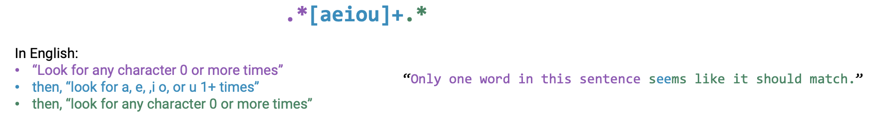
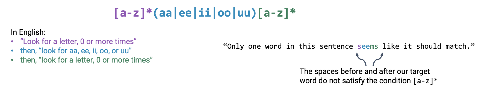

Understand Python string manipulation and pandasstr methods for working with text data
Parse and create regex, with a reference table
Use vocabulary (closure, metacharater, groups, etc.) to describe regex metacharacters
6.1 Why Work with Text?
Last lecture, we learned of the difference between quantitative and qualitative variable types. The latter of these variable types includes string data, which is the primary focus of today’s lecture. In this note, we’ll discuss the necessary tools to manipulate text: pandas string operations and regular expressions.
We typically have one of two goals when working with text.
Canonicalization: convert data that has multiple formats into a standard form.
For example, to address datasets in which text values have inconsistent capitalization, whitespace, or use of symbols
Extract information into a new feature.
For example, to extract information about dates and times from a written text description
6.2.str Methods in pandas
In “base” Python, we have many built-in functions for manipulating string data. You likely encountered these in your introductory programming classes. A summary of common Python methods for operating on strings is given below.
The limitation of Python’s native functions for manipulating strings is that they are not designed to work at scale – Python assumes that we are operating on one string at a time, when, as data scientists, we may be working with large datasets of string data. Iterating over all string values in a DataFrame or Series is computationally expensive and may take too long to be of practical use.
Fortunately, pandas offers a method of vectorizing string operations using the .str operator. Syntax of the form Series.str instructs pandas to act on a full Series of text data at once, without the need to iterate over individual values. A statement like Series.str.string_function() will then apply the string operation string_function() to every value contained in the Series.
The table below provides an overview of common string functions. The “Python” column gives the usage of each function on an individual string s, while the “pandas” column shows the use of the .str operator to manipulate Series of strings.
Operation
Python (single string)
pandas (Series of strings)
Transformation
s.lower(_)
s.upper(_)
ser.str.lower(_)
ser.str.upper(_)
Replacement + Deletion
s.replace(_)
ser.str.replace(_)
Split
s.split(_)
ser.str.split(_)
Substring
s[1:4]
ser.str[1:4]
Membership
'_' in s
ser.str.contains(_)
Length
len(s)
ser.str.len()
6.2.1 Canonicalization
With our new .str operator in hand, let’s see how string methods allow us to achieve our two goals of working with text: canonicalization and extraction.
Consider the following datasets containing information about counties. Although both DataFrames include a “County” column, the county names are formatted differently. Attempting to merge the two DataFrames fails because the two tables do not share commonly-formatted county names.
Code
import pandas as pdcounty_and_state = pd.read_csv('data/county_and_state.csv')county_and_pop = pd.read_csv('data/county_and_population.csv')display(county_and_state)display(county_and_pop)
County
State
0
De Witt County
IL
1
Lac qui Parle County
MN
2
Lewis and Clark County
MT
3
St John the Baptist Parish
LS
County
Population
0
DeWitt
16798
1
Lac Qui Parle
8067
2
Lewis & Clark
55716
3
St. John the Baptist
43044
# When we attempt to merge on the "County" column, common values cannot be foundcounty_and_state.merge(county_and_pop, left_on="County", right_on="County")
County
State
Population
Let’s define a function to assist with canonicalization of the "County" columns. canonicalize_county_series applies a sequence of str operations on an inputted Series to:
Convert the text to lowercase
Replace inconsistent uses of whitespace and symbols
Now, let’s experiment with an extraction task. Consider the following three pieces of text data, which are a log files from a computer operating system.
withopen('data/log.txt', 'r') as f: log_lines = f.readlines()log_lines
Suppose we want to extract the day, month, year, hour, minutes, seconds, and timezone. Unfortunately, these items are not in a consistent position relative the beginning of the string, so slicing by some fixed offset won’t work. For example, the date begins 21 characters from the start of the first string and 20 characters from the start of the second string.
Instead, we can use some clever thinking. Notice how the relevant information is contained within a set of brackets, further seperated by / and :. We can hone in on this region of text, and split the data on these characters. Python’s built-in .split function makes this easy.
For simplicity, we’ll only consider a single string, rather than an entire Series of data.
first = log_lines[0] # Only considering the first row of datapertinent = first.split("[")[1].split(']')[0]day, month, rest = pertinent.split('/')year, hour, minute, rest = rest.split(':')seconds, time_zone = rest.split(' ')day, month, year, hour, minute, seconds, time_zone
('26', 'Jan', '2014', '10', '47', '58', '-0800')
Phew, that was a lot of work! The logic above required a lot of manipulation to “hack” together the information we needed. The resulting code is verbose; that is, it required many lines of code to achieve a fairly simple task. This is a major limitation of both Python in-built functions and pandasstr operations – they often don’t generalize well to more complex patterns of storing text data.
Fortunately, there is another way of working with patterns in text: regular expressions.
6.3 Regular Expressions
A regular expression (“regex”) is a sequence of characters that specifies a search pattern. They are written to extract specific information from text. Regular expressions are part of a smaller programming language embedded in Python, made available through the re module. As such, they have a stand-alone syntax and methods for various capabilities.
What do regex patterns look like? An example is given in the code cell below. This pattern is designed to seek out US Social Security Numbers, which have the format “###-##-####”. We’ll discuss how this pattern was formed, as well as how to design patterns of your own, in the next section.
r"[0-9]{3}-[0-9]{2}-[0-9]{4}"# 3 of any digit, then a dash,# then 2 of any digit, then a dash,# then 4 of any digit
'[0-9]{3}-[0-9]{2}-[0-9]{4}'
There are many resources to learn and experiment with regular expressions. A few are provided below:
Be sure to check Python as the “flavor” on the left.
6.3.1 Basic Regex Syntax
There are four basic operations with regular expressions.
6.3.1.1 Concatenation
When a sequence of characters are listed in a regex pattern, regex will look for that literal sequence of characters in the text.
For example, the regex pattern AABAAB will match the string “AABAAB”.
6.3.1.2 The OR operator: |
A vertical bar | means “or” in regex. When | is included in a pattern, regex will look for the sequence of characters on its left, or the sequence of characters on its right.
For example, the regex pattern AA|BAAB will match either the string “AA” or the string “BAAB”.
6.3.1.3 Zero or more: *
An asterisk * means “look for the preceding character, zero or more times.”
For example, the pattern AB*A will match “AA” (zero “B”s), “ABA” (one “B”), “ABBA” (two “B”s), and so on.
6.3.1.4 Grouping: ( )
Parentheses are used to apply a regex operation to a group of characters.
For example, the pattern (AB)*A applies the logic: “look for ‘AB’ zero or more times, then look for an ‘A’.” It would match the strings “A” (zero “AB”s), “ABA” (1 “AB”), “ABABA” (2 “AB”s), and so on.
The pattern A(A|B)AAB applies the logic: “look for an ‘A’. Then, look for an ‘A’ or a ‘B’. Finally, look for ‘AAB’.” It matches the strings “AAAAB” or “ABAAB”.
Symbols like *, ( ), and | are called metacharacters –– they represent a regex operation, rather than a literal tect character.
6.3.2 Regex Expanded
The four basic regex operations can be combined with more advanced metacharacters to produce patterns of greater complexity.
6.3.2.1 Wildcard: .
A period is the “wildcard” character in regex – it represents any character. This is often used when we do not know in advance what specific characters we might encounter in our text data.
For example, the pattern .U.U.U. matches any sequence that alternates between some character and the letter “U”. The strings “CUMULUS” and “JUGULUM” would both be matched.
6.3.2.2 One or more: +
A plus sign is used to indicate that the preceding character should appear at least once in the string (contrast this to *, where the preceding character does not necessarily need to appear).
For example, the pattern AB+ matches any sequence of an “A” followed by one or more “B”s – the strings “AB”, “ABB”, and “ABBB” would all match.
6.3.2.3 Repetition: { }
Curly braces are used to specify how many times the preceding character should appear. When a single number a is placed in curly brackets ({a}), the preceding character should appear exactly a times in the string. When two numbers a and b are placed in curly brackets ({a, b}), the preceding character should appear betweena and b times in the string.
For example, AB{2} matches “ABB”. AB{0, 2} matches “A”, “AB”, or “ABB”.
6.3.2.4 Character class: [ ]
A character class defines a set of characters belonging to the class. When placed in a regex pattern, the pattern will match and of the characters contained in the class. This makes character classes a powerful tool for cases where you know what the data might look like, but don’t know the exact characters for certain. For example, we know that Social Security Numbers will always consist of numeric digits, but we don’t know what specific numbers will appear in any one SSN.
To define a character class, simply enclose the desired characters in square brackets, [ ]. For example, the pattern "[aeiou]" defines a character class that will match the letters “a”, “e”, “i”, “o”, or “u”.
Regex includes several pre-defined character classes.
[A-Z] includes any uppercase letter between “A” and “Z”
[a-z] includes any lowercase letter between “a” and “z”
[0-9] includes any numeric digit between 0 and 9
[A-Za-z0-9] includes all letters and all digits
Additionally, there are three metacharacters that provide shortcuts to common character classes.
\w is equivalent to [A-Za-z0-9]
\d is equifalent to [0-9]
\s matches whitespace, such as spaces, tabs, and newlines
In some situations, we may want to match any character other than those included in a class. For example, we might want to match any character other than a numeric digit. We use a carat, ^, to negate a character class. The pattern [^0-9] matches any character that is not a digit between 0 and 9. Similarly, we can use the capitalized forms of the character class metacharacters to indicate their negations.
\W matches anything other than [A-Za-z0-9]
\D matches anything other than [0-9]
\S matches anything other than whitespace
6.3.3 Interpreting a Regex Pattern
At this point, we have the tools needed to write some fairly sophisticated patterns. The social security sumber pattern introduced at the start of this section no longer looks so foreign. Recall that our pattern took the following form:
r"[0-9]{3}-[0-9]{2}-[0-9]{4}"
'[0-9]{3}-[0-9]{2}-[0-9]{4}'
We can break this pattern down to interpret what it represents:
[0-9]{3}: look for a numeric digit, exactly 3 times
-: look for the literal character “-”. We know this because “-” does not represent a regex metacharacter when not used inside of a character class.
[0-9]{2}: look for a numeric digit, exactly 2 times
-: look for the literal character “-”
[0-9]{4}: look for a numeric digit, exactly 4 times
Put together, the pattern will match SSNs like “555-12-8967” and “123-45-6789”.
6.3.4 Greediness
There is one more important regex concept that we must consider before diving into patterns of our own: the concept of greediness. We say that regex uses “greedy” logic because it will always seek out the longest possible match in a string.
Regex greediness is best illustrated through example. Let’s consider the following problem: we want to match any lowercase alphabetic string that has a repeated vowel. For example, we want our pattern to match strings like “noon”, “peel”, “festoon”, or “oodles”. Take a moment to consider how you might approach this task.
As a first attempt, you may have written a pattern that looked something like this (and, if you didn’t, think about what reasoning is encoded in this pattern): .*[aeiou]+.*. Interpreted literally:
.*: look for any character, zero or more times
[aeiou]+: look for an “a”, “e”, “i”, “o”, or “u”, one or more times
.*: look for any character, zero or more times
At first blush, this pattern may seem like a fairly reasonable solution to the problem. However, something strange happens when we actually apply this pattern to a test string. In the code below, r".*[aeiou]+.*" represents our regex pattern, while "Only one word in this sentence seems like it should match.” represents the string of data that the pattern will attempt to match. We’ll discuss the functions used to apply regex patterns later.
In the context of our goal from above, we only want to match the word “seems”.
import rere.search(r".*[aeiou]+.*", "Only one word in this sentence seems like it should match.")[0]
'Only one word in this sentence seems like it should match.'
That’s strange – the regex pattern matches the entire sentence, rather than just the word “seems”. The reason for this is regex’s greediness.
The figure below breaks down how regex will greedily interpret the pattern we dissected above. Specifically, the first .* will extend across all characters before the “ee” in the string, not just the “s” immediately before our repeated vowels. Likewise, the second .* will extend across all characters after the “ee” in the string, rather than just the “ms” after the vowels.

This means that we need to be mindful of regex’s greed when we are only interested in a specific portion of a string. If we are not careful, we may end up with a substantially longer match than intended.
The following pattern avoids the issue we ran into above by being more specific about what characters can and cannot be included in our text string.
re.search(r"[a-z]*(aa|ee|ii|oo|uu)[a-z]*", "Only one word in this sentence seems like it should match.")[0]
'seems'

6.3.5 Regex Expanded (Expanded)
One final batch of regex syntax.
6.3.5.1 Escape character: \
Sometimes, we may wish to match the literal character associated with a regex metacharacter. For example, you may wish to extract a literal plus sign “+”, rather than signify its metameaning “one or more”. A backslash \ is used to “escape out” of a metacharacter. Regex will interpret the character following the backslash literally.
The pattern a\+b matches the string “a+b”.
6.3.5.2 End: $
What if we only want to match characters if they appear at the end of a string? A dollar sign $ is used to orient the regex pattern at the end of a test string. The pattern will only match if the characters in question appear at the end of the string.
For example, the pattern abc$ only matches text if the sequence “abc” appears at the end of the string data. The string “123 abc” satisfies this condition; the string “abc 123” does not.
6.3.5.3 Start: ^
Similarly, we can specify that regex should only match patterns at the start of a string using a carat ^. Notice that when we use ^outside of a character class definition, it takes on a different meaning – it no longer represents the negation of a class.
For example, the pattern ^abc only matches text if the sequence “abc” appears at the start of the string data. The string “abc 123” satisfies this condition; the string “123 abc” does not.
6.3.6 Summary
Operation
Example
Matches
Doesn’t match
concatenation
AABAAB
AABAAB
every other string
or: |
AA|BAAB
AA, BAAB
every other string
zero or more: *
AB*A
AA, ABBA, ABBBBBA
AB, ABABA
group: ( )
A(A|B)AAB
AAAAB, ABAAB
every other string
any character: .
.U.U.U.
CUMULUS, JUGULUM
SUCCUBUS, TUMULTUOUS
character class: [ ]
[A-Za-z][a-z]*
word, Capitalized
camelCase, 4illegal
repeated exactly a times: {a}
j[aeiou]{3}hn
jaoehn, jooohn
jhn, jaeiouhn
repeated a to b times: {a, b}
j[ou]{1,2}hn
john, juohn
jhn, jooooohn
at least one: +
jo+hn
john, jooohn
jhn, jjohn
beginning of string: ^
^ark
ark two, ark o ark
dark
end of string: $
ark$
dark, ark o ark
ark two
escape character: \
cow\.com
cow.com
cowscom
6.4 Regex Functions
With the foundations of regex in hand, let’s start using our learning to create patterns of our own. To do so, we’ll need to learn the Python functions for actually applying regex to text.
Before we begin, we will introduce something called a raw string. We will usually use raw strings of the form r"a raw string" to construct a regex pattern, as opposed to “standard” strings of the form "a non-raw string". The reason why is fairly tedious, and not in scope for Data 100. Put simply, a standard Python string interprets the character \ in a different way to how it is used in regex. Using raw strings avoids this issue.
6.4.1 Extraction
The re module of Python allows us to use regex on individual strings. When working in pandas, str operations allow us to apply vectorized regex functions to Series of strings.
To extract a regex match from a single string, we use the re.findall function. re.findall will return a list containing all matches of the regex pattern in a provided string.
import retext ="My social security number is 123-45-6789 bro, or actually maybe it’s 321-45-6789.";pattern =r"[0-9]{3}-[0-9]{2}-[0-9]{4}"re.findall(pattern, text)
['123-45-6789', '321-45-6789']
The pandas equivalent is str.findall(). The output of Series.str.findall() is a new Series containing lists of all matches contained in each string of the original Series.
Code
# Create a DataFrame of social security numbers to use as an exampledf_ssn = pd.DataFrame( ['987-65-4321','forty','123-45-6789 bro or 321-45-6789','999-99-9999'], columns=['SSN'])
# An example Series of social security numbersdf_ssn["SSN"]
You might wonder: what if we only want to extract part of our full regex pattern? For example, what if we only wanted to return the middle two digits of each social security number?
Regex uses a piece of syntax called a capturing group to specify what subset of a pattern should be “captured”. Capturing groups are denoted by parentheses ( ). Earlier, we used parentheses to outline the order of operations; depending on what regex function we use, parentheses can sometimes also be interpreted as capturing groups. re.findall and str.findall will both interpret parentheses as capturing groups.
Consider the example text below. What if we wanted to extract the hour, minute, and second mentioned in the message?
text ="I will meet you at 08:30:00 pm tomorrow"
Capturing groups help us extract only the information about the time from this string. Notice that only the values enclosed in parentheses in the regex pattern are returned.
To extract capturing groups from a Series, we use the functions str.extract or str.extractall.
str.extract will scan each string in a Series, then return a DataFrame containing the first match for the provided regex pattern. Each capturing group within that pattern will be placed in a column of the DataFrame.
# Recall our SSN DataFrame from abovedf_ssn
SSN
0
987-65-4321
1
forty
2
123-45-6789 bro or 321-45-6789
3
999-99-9999
# Will extract only the *first* match of all groupspattern_group_mult =r"([0-9]{3})-([0-9]{2})-([0-9]{4})"# 3 groupsdf_ssn['SSN'].str.extract(pattern_group_mult)
0
1
2
0
987
65
4321
1
NaN
NaN
NaN
2
123
45
6789
3
999
99
9999
Sometimes, a regex pattern may encounter multiple matches in a single entry string of a Series. The function str.extractall will extract all matched instances of the regex pattern, not just the first. It produces a MultiIndexed DataFrame where text strings with multiple regex matches will have a row for each match.
# Will extract all matches of all groupsdf_ssn['SSN'].str.extractall(pattern_group_mult)
0
1
2
match
0
0
987
65
4321
2
0
123
45
6789
1
321
45
6789
3
0
999
99
9999
6.4.2 Substitution
Another task we may encounter when working with text data is the need to substitute portions of a string with a different character. For example, we may want to replace messy HTML tags with an empty string to clean a dataset.
# A messy string with extraneous HTML datatext ="<div><td valign='top'>Moo</td></div>"
When working with individual strings, we use re.sub. The code below seeks out HTML tags denoted with angle brackets < > in the text and replaces them with empty strings. The first argument to the function is the regex pattern, the second is the string that should replace any matched text, and the third is the test string on which to run the pattern.
pattern =r"<[^>]+>"re.sub(pattern, "", text)
'Moo'
The vectorized pandas equivalent is str.replace. The first argument to the function is the regex pattern we wish to use; the second argument is the string that should replace the matched text. The regex parameter tells str.replace to expect a regex pattern.
Code
# Create a DataFrame of HTML tags to use as an exampledf_html = pd.DataFrame(['<div><td valign="top">Moo</td></div>','<a href="http://ds100.org">Link</a>','<b>Bold text</b>'], columns=['Html'])